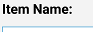

Adding Grocery Items
Pressing the
"+" button while in the pantry view allows you to add a new grocery
item to your pantry by opening the add grocery dialog.
 Every
grocery in your pantry must have its own individual name; duplicate
names are not permitted. Item names should contain only uppercase or
lowercase letters, numbers and spaces. Other characters are reserved
for special use such as the dash "-" character. Special use
characters are enabled via the settings menu. When the dash
character is used as part of the grocery item's name, then any text
appearing after the dash will be displayed instead of the
department; items on your shopping list will still be sorted by
department but, the department name will be hidden.
 Select the
department where the new grocery item is located from the department
drop down menu. Grocery Gopher comes preloaded with a list of
departments typically found in most grocery stores and additional
departments may be added through the settings menu. Item's
appear on your shopping list ordered by department, the order of
which also may be adjusted through the settings menu. A useful
tip is to add other stores as individual departments to the bottom
of the department list. If for example you do most of your grocery
shopping at Kroger but, purchase just a few items at Walmart, then
add Walmart as a department to the bottom of the list.
Select the
department where the new grocery item is located from the department
drop down menu. Grocery Gopher comes preloaded with a list of
departments typically found in most grocery stores and additional
departments may be added through the settings menu. Item's
appear on your shopping list ordered by department, the order of
which also may be adjusted through the settings menu. A useful
tip is to add other stores as individual departments to the bottom
of the department list. If for example you do most of your grocery
shopping at Kroger but, purchase just a few items at Walmart, then
add Walmart as a department to the bottom of the list.
Checking the
"Also include on shopping list" checkbox will include this new item
on your shopping list in addition to adding the item to your pantry
once you press the "Save" button.